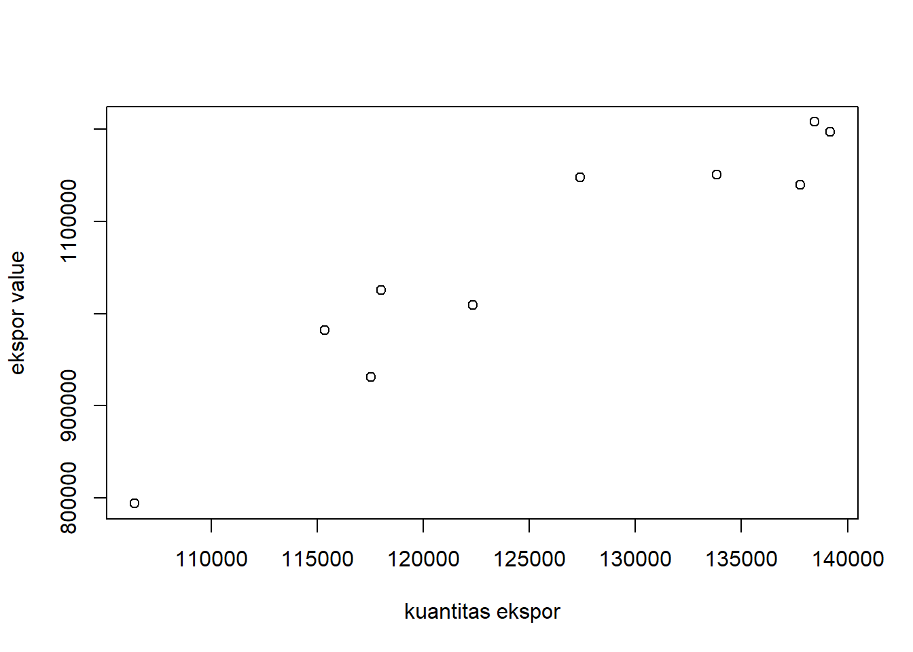

library(tidyverse)
library(readxl)Analisis Pengaruh Kuantitas Ekspor Tembakau terhadap Nilai Ekspor Tembakau
Metodologi Penelitian Politeknik APP Jakarta

1 Pendahuluan
1.1 Latar belakang
Perdagangan merupakan sebuah alur pertukaran barang dan jasa dari suatu wilayah ke wilayah lainnya. Perdagangan timbul dikarenakan adanya perbedaan kebutuhan dan sumber daya yang dimiliki.
Pengertian lain mengenai perdagangan ialah suatu kegiatan ekonomi yang mengaitkan antara produsen dan konsumen. Perdagangan dapat sebagai kegiatan distribusi, menjamin peredaran, penyebaran, dan penyediaan barang melalui mekanisme pasar.
Perdagangan tidak hanya berbatas antar wilayah, namun perdagangan juga dapat dilakukan dengan negara lain. Perdagangan dengan negara lain ini disebut juga perdagangan internasional.
Pada dasarnya, Perdagangan Internasional tidak semudah yang terlihat. Banyak aturan-aturan dan bahasan penting lainnya dalam melakukan suatu perdagangan ke negara lain. Perdagangan Internasional memiliki 2 kegiatan utama yaitu Ekspor dan Impor. Ekspor-Impor di Indonesia sendiri diatur dalam Undang-Undang No. 17 Tahun 2006 tentang perubahan Undang-Undang No. 10 Tahun 1995 Tentang Kepabeanan.
Kegiatan perdagangan internasional membuka peluang yang sangat besar dalam berbagai bidang. Dengan adanya berbagai peluang tersebut, maka terjadi globalisasi dalam segala aspek yang ada. Baik teknologi, produksi, maupun manufaktur.
Indonesia diberkati dengan berbagai macam kekayaan sumber alam. Hal ini dikarenakan Indonesia sendiri memiliki iklim yang mumpuni yaitu iklim tropis. Dengan iklim tropis tersebutlah Indonesia dapat memiliki berbagai jenis sumber daya alam dan melakukan kegiatan perdagangan internasional dengan negara lain.
1.2 Batasan Masalah
Tembakau merupakan salah satu komoditas perdagangan yang penting di dunia dengan produk utamanya ialah daun tembakau dan rokok.
Tembakau adalah tanaman yang identik sebagai bahan utama dari industri rokok. Di Indonesia, tembakau sebagai bahan rokok sangat dikenal baik kalangan remaja maupun dewasa.
Meskipun demikian, Tembakau juga memiliki manfaat sebagai tanaman herbal. Tanaman tembakau sendiir (Nicotiana tobacum.L.), dalam dunia pertanian masuk ke dalam golongan tanaman perkebunan.
Ekspor tembakau sendiri terjadi berkaitan erat dengan adanya permintaan mengenai tembakau itu sendiri. Selain itu, penawaran pada pasar yang memiliki permintaan akan tembakau akan mengakibatkan terjadinya ekspor.
Penawaran dan Permintaan pasar tembakau meningkat dengan adanya pertumbuhan penduduk. Di tahun 2018, Indonesia diketahui berada pada peringkat ke 6 sebagai negara penghasil tembakau terbesar di dunia, dengan jumlah produksi sebesar 136 ribu ton atau sekitar 1.91% dari total produksi tembakau dunia.
1.3 Rumusan masalah
Rumusan masalah dari Penelitian ini adalah untuk mengetahui Peluang Ekspor Tembakau Indonesia.
1.4 Tujuan Penelitian
Tujuan dari Penelitian ini adalah untuk mengetahui hubungan antara kuantitas ekspor dengan nilai ekspor Tembakau dan apakah ada variabel lain yang berpengaruh terhadap nilai ekspor tembakau.
1.5 Package
Package yang digunakan dalam pengolahan data hanya tidyverse dan readxl. Berikut merupakan package yang digunakan dalam pengolahan data
2 Studi pustaka
Ekspor adalah kegiatan mengeluarkan daerah barang dari daerah pabean. Dalam hal ini, berarti barang yang dikeluarkan dari daerah pabean adalah Tembakau. Ekspor memberikan banyak keuntungan bagi para pelaku yang terlibat dalam proses ekspor. Ekspor dapat meningkatkan laba perusahaan dan dividen negara, serta membuka pasar baru di luar negeri, dan dalam upaya membiasakan diri bersaing di luar negeri.
Selain itu, permasalahan yang dihadapi ekonomi internasional tidak lain mengenai kelangkaan produk. Masalah tersebut muncul karena adanya permintaan dan kebutuhan dari manusia serta penawaran dari sumber daya yang ada bersifat terbatas.
Penyebab utama terjadinya perdagangan internasional sendiri adalah karena adanya perbedaan kemampuan dalam memproduksi suatu barang. Dalam kondisi tertentu, suatu negara yang tidak mampu memproduksi barang, maka harus membeli dari negara lain.
Sementara bagi negara yang memproduksi, hal ini akan meningkatkan jumlah kuantitas yang di ekspor. Namun, terdapat variabel lain yang dapat mempengaruhi nilai ekspor tembakau, yaitu adalah harga. Harga sendiri berkaitan erat dengan permintaan dan penawaran.
Permintaan adalah berbagai jumlah barang dan jasa yang diminta pada berbagai macam tingkat harga tertentu pada waktu tertentu dengan asumsi bahwa cateris paribus atau komponen lain yang mempengaruhi permintaan di anggap tetap. Seperti pendapatan, selera, harga barang lain, dan lainnya.
Selain permintaan, penawaran juga memiliki peranan dalam melakukan kegiatan perdagangan internasional. Penawaran suatu komoditas baik berupa barang dan jasa, adalah jumlah dari komoditas yang ditawarkan oleh produsen kepada konsumen dalam suatu pasar yang disasar dengan tingkat harga dan waktu tertentu.
Dikatakan bahwa, antara harga dan jumlah yang ditawarkan memiliki hubungan yang positif yaitu jika suatu harga naik, maka jumlah komoditas yang ditawarkan semakin banyak.
Faktor lain pendorong bahwa kuantitas mempengaruhi nilai ekspor tembakau ialah harga. Harga dan kuantitas suatu komoditas berhubungan secara negatif.
Untuk harga dalam melakukan ekspor, harga yang ditawarkan berhubungan secara negatif dengan jumlah yang diminta. Semakin besar harga komoditas, maka akan sedikit kuantitas komoditas yang diminta oleh pasar. Sebaliknya untuk penawaran, harga berhubungan secara positif. Semakin tinggi harga, maka akan semakin banyak pula kuantitas yang ditawarkan.
3 Metode penelitian
3.1 Data
Penelitian ini menggunakan data Kuantitas Ekspor Tembakau dan Nilai (Value) Ekspor Tembakau dari tahun 2012 hingga 2021 dengan HS Code 24 (Tobacco and Manufactured Tobacco Substitutes).
Berikut merupakan data Kuantitas Ekspor Tembakau dengan HS Code 24 (Tobacco and Manufactured Tobacco Substitues).
| Tahun | Jumlah Kuantitas (Tons) |
|---|---|
| 2012 | 106.381 |
| 2013 | 117.543 |
| 2014 | 118.001 |
| 2015 | 115.340 |
| 2016 | 122.351 |
| 2017 | 137.785 |
| 2018 | 139.180 |
| 2019 | 138.457 |
| 2020 | 133.831 |
| 2021 | 127.389 |
Berikut merupakan data Nilai (Value) Ekspor Tembakau dengan HS Code 24 (Tobacco and Manufactured Tobacco Substitues).
| Tahun | Jumlah Nilai (Value) Ekspor (USD) |
|---|---|
| 2012 | 794.176 |
| 2013 | 931.386 |
| 2014 | 1.025.438 |
| 2015 | 981.881 |
| 2016 | 1.009.506 |
| 2017 | 1.139.600 |
| 2018 | 1.197.294 |
| 2019 | 1.207.848 |
| 2020 | 1.150.719 |
| 2021 | 1.147.419 |
3.2 Metode analisis
Metode yang digunakan dalam melakukan analisis adalah Metode regresi univariat atau Ordinary Least Square (OLS), yaitu dengan 1 variabel independen. Penelitian ini bermaksud mencari hubungan antara kuantitas ekspor dan nilai ekspor.
\[ y_{t}=\beta_0 + \beta_1 x_t+\mu_t \] di mana \(y_t\) adalah nilai ekspor dan \(x_t\) adalah kuantitas ekspor.
4 Pembahasan
4.1 Pembahasan masalah
Sebelum data di run, ada baiknya memanggil package terlebih dahulu.
setwd("C:/Users/harto/OneDrive/Documents/uas metopel")
dat<-read_excel('Ekspor Tembakau.xlsx')Selanjutnya, plot dari X dan Y. Dengan X sebagai Kuantitas Ekspor dan Y sebagai Nilai (Value) Ekspor. Maka didapatkan plot sebagai berikut
plot(dat$X,dat$Y,xlab="kuantitas ekspor",ylab="ekspor value")
Berikut merupakan data visual yang telah di lakukan
ggplot(data=dat,aes(x=X,y=Y)) +
geom_point(color="blue") +
labs(title="hubungan Kuantitas dengan Nilai Ekspor",
x="Kuantitas ekspor",
y="ekspor value",
caption = "Sumber: Trade Map") +
theme_minimal()
4.2 Analisis masalah
Berikut merupakan hasil regresi yang telah dilakukan
reg1<-lm(Y~X,data=dat)
summary(reg1)
Call:
lm(formula = Y ~ X, data = dat)
Residuals:
Min 1Q Median 3Q Max
-53351 -31541 -4799 29668 69399
Coefficients:
Estimate Std. Error t value Pr(>|t|)
(Intercept) -3.303e+05 1.648e+05 -2.004 0.08 .
X 1.105e+01 1.307e+00 8.456 2.92e-05 ***
---
Signif. codes: 0 '***' 0.001 '**' 0.01 '*' 0.05 '.' 0.1 ' ' 1
Residual standard error: 44850 on 8 degrees of freedom
Multiple R-squared: 0.8994, Adjusted R-squared: 0.8868
F-statistic: 71.51 on 1 and 8 DF, p-value: 2.923e-05Didapatkan dari regresi, dapat dilihat bahwa X signifikan.
5 Kesimpulan
Berdasarkan pengujian yang telah dilakukan dengan satu variabel penelitian, dapat disimpulkan bahwa bukan hanya kuantitas yang mempengaruhi nilai ekspor tembakau. Faktor lain yang mempengaruhi ekspor tembakau ialah harga dari komoditas tersebut. Harga tersebut berkaitan erat dengan adanya permintaan (demand) dan penawaran (supply). Pada sisi penawaran, harga berhubungan secara positif. Semakin tinggi harga, maka kuantitas yang ditawarkan semakin banyak. Sementara dalam sisi permintaan, harga berhubungan secara negatif. Dalam melakukan ekspor, Semakin besar harga komoditas, maka akan sedikit kuantitas komoditas yang diminta oleh pasar. Oleh karena itu, nilai ekspor tembakau akan sangat dipengaruhi oleh harga selain jumlah kuantitas (permintaan) yang ada.
6 Referensi
Mulyandari, D. (2019). ANALISIS FAKTOR-FAKTOR YANG MEMPENGARUHI EKSPOR TEMBAKAU. Universitas Muhammadiyah Surakarta. http://eprints.ums.ac.id/76563/11/NASKAH%20PUBLIKASI.pdf
Hidayati, I. R. (2017). PENGARUH EKSTRAK DAUN TEMBAKAU (Nicotiana tabacum L.) SEBAGAI ANTIBAKTERI TERHADAP Pseudomonas aeruginosa ATCC 27853 DAN Escherichia coli ATCC 25922 SECARA In Vitro. [Universitas Pembangunan Nasional Veteran Jakarta]. https://repository.upnvj.ac.id/4353/8/BAB%20II.pdf
Dana, Badara Shofi; Hasan, Achmad Fawaid (2016). ANALISIS KINERJA EKSPOR TEMBAKAU DI INDONESIA: PENDEKATAN VECTOR AUTOREGRESSION. UNEJ e-Proceeding, [S.l.], p. 668-678, dec. 2016. Available at: <https://jurnal.unej.ac.id/index.php/prosiding/article/view/3730>.
Wibowo, R., Zainuddin, A., Magfiroh, I. S., Setyawati, I. K., Ridjal, J. A., Suciati, L. P., & Rahman, R. Y. (2018). Agribisnis Tembakau, Membuka Ruang Inovasi dan Bisnis untuk Kemajuan Industri (1 ed.). PT Penerbit IPB Press. https://repository.unej.ac.id/bitstream/handle/123456789/92978/F.%20P_Buku%20Bunga%20Rampai_Intan%20Kartika%20S_DAYA%20SAING%20INDUSTRI%20TEMBAKAU%20INDONESIA.pdf?sequence=1&isAllowed=y
KEMENKES RI, P. (2018, November 19). Indonesia sebagai Negara penghasil tembakau terbesar keenam. https://p2ptm.kemkes.go.id/infographic-p2ptm/penyakit-paru-kronik/page/35/indonesia-sebagai-negara-penghasil-tembakau-terbesar-keenam
Putra, D. A. (2013). ANALISIS FAKTOR-FAKTOR YANG MEMPENGARUHI EKSPOR TEMBAKAU INDONESIA KE JERMAN [Universitas Negeri Semarang]. http://lib.unnes.ac.id/17904/1/7111409079.pdf